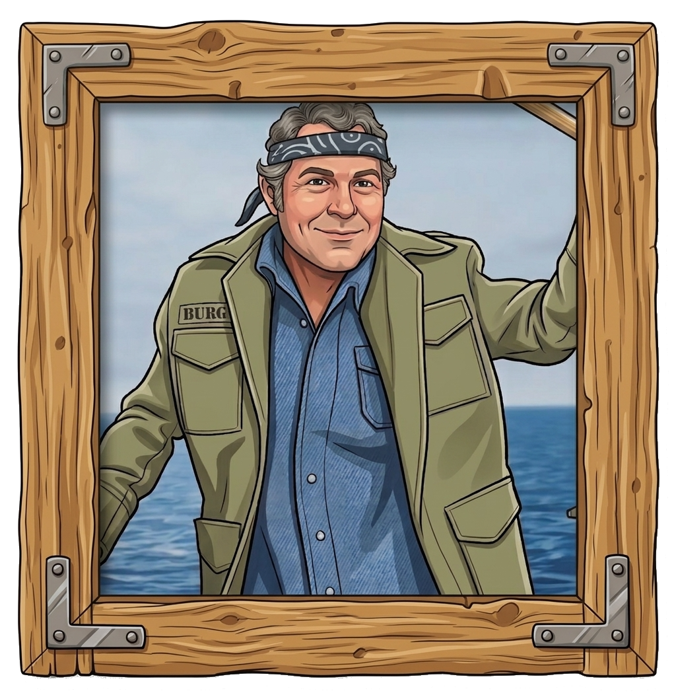
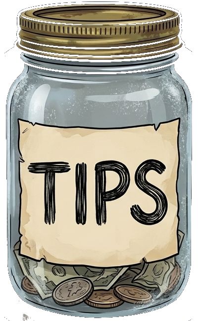

The Jawbs browser extension is the best add-on to your LinkedIn job search. It smells opportunities from miles away with tactical AI gear to efficiently land the BIG ONE. You're gonna need a bigger boat.
- CAST With one-click AI analysis against your resume, comp ranges and connections you'll know in seconds how much effort each job is worth. Dun dun. Dun dun.
- BAIT With AI-generated application and interview prep you have the gear to reel in multiple opportunities simultaneously to land the BIG ONE.
- MEMORY With a retained archive you can easily jump on when there's a bite. Imagine being able to quickly recall analysis and notes when you answer their call.
Tell them I'm going fishing…


Please Tip Your Captain3 Step Setup
-
1
Add your Anthropic API key
Grab one from console.anthropic.com. Stored locally in
chrome.storage.local— never sent anywhere exceptapi.anthropic.com. -
2
Fill in your profile and materials
The fit analysis is only as good as what you tell it about yourself. Load or paste your profile, master resume, and (optionally) writing samples.
-
3
Open a LinkedIn jawb posting
The Jawbar populates automatically. Click Analyze on the Career Fit card to run your first analysis.
Anchor Points
The side panel that opens on the right. Analyzes whichever LinkedIn jawb you're viewing — one card per analysis type, nothing runs until you click.

Your permanent archive of every saved / applied jawb. Sort, search, filter, export. Top-4 analytics preview lives here.

All 11 analytics charts on one screen — funnel, voyage log, cadence, calibration, and more.
Barrel icons on Jawbar cards mean "not yet cast" — that analysis hasn't run. They flip to green ✓ once done.
Save any LinkedIn /jobs/search/* URL. Manage them from the Jawboard; one-click to re-run.
Phrases you want to skip. LinkedIn jawb cards matching any get dimmed on search-results pages.
Anthropic Claude by default. Optional Ollama routing per feature — keeps routine tasks off your API bill.
Privacy stance

All data is local. Everything lives in chrome.storage.local on this machine.

API key is plaintext. Standard for extensions — appropriate for personal use, not shared devices.

No telemetry. Nothing is logged, phoned home, or sent anywhere except your AI provider.
You own your data. Export the whole Jawboard as JSON any time. Delete the extension to erase.
Questions or ideas? Email jawbsthebrowserextension@gmail.com.